Perched on a cliff called Bahuchiriya, Mehrangarh is a 15th century royal fort in Jodhpur. Literally meaning ‘The Sun Fort’, Mehrangarh Fort is indeed one of the most popular big forts in India. Guarded by 7 gates, Mehrangarh fort was built primarily for the military defense but inside the fort one can find some of the most beautiful palaces. The palaces have ornately decorated ceilings and walls. It is estimated that 17 generation of Rajput rulers have reigned here and have added several structures like temples, palaces and courtyard yet not even one structure looks out of place as the blending has been skillfully done. The delicate carvings on the fort are also worth mentioning as despite the fragile nature of the sandstones used, the job of intricate carvings has been done so well. Mehrangarh is also one of the best preserved forts of India; and in order to be maintained, a part of it has been converted into a museum. Imposing and invincible, the fort has towers of about 120ft and its walls are 6m thick at place. This colossal fort led writers Rudyard Kipling saying that it is not a work of men but giants!
October to March.
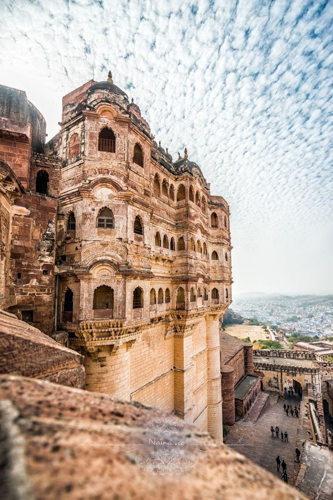 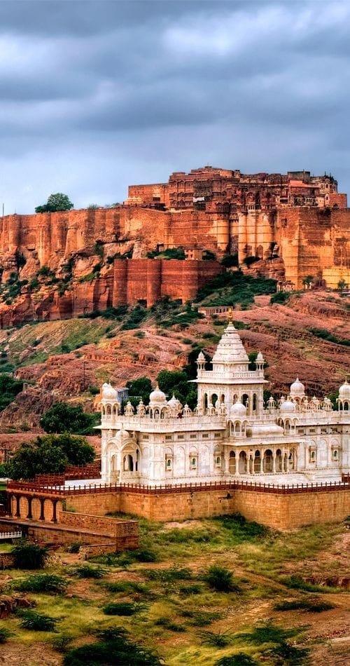 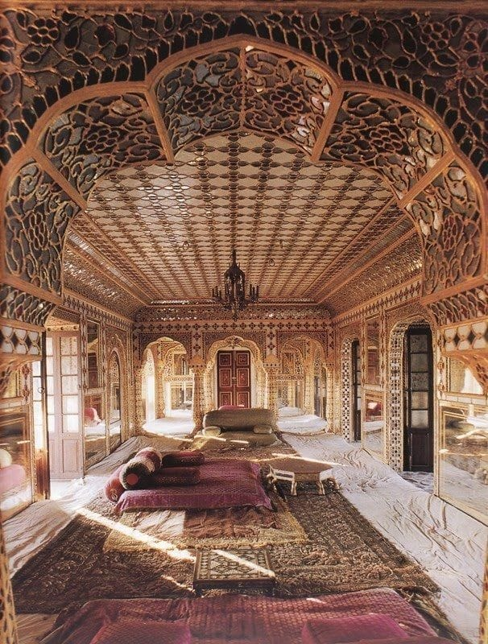Built in 1648 as the fortified palace of Shahjahanbad, Red fort is indeed one of the most majestic structures in India. Named after its massive enclosing wall of red sandstone, the architecture of the fort is credited to architect Ustad Ahmad Lahori. The fort has four accesses that are strategically made in each direction, the famous one being the Lahori Gate. Red fort including the earlier Salimgarh fort occupies an area of 120 acres. Bastion mounted with domed kiosks at regular intervals, colossal entrance gates, octagonal towers, semi arch arcades and minarets make Red fort a majestic structure in Indian history. The mosaic work seen in almost all the structures in the fort complex is worth appreciating, in fact the entire for is worthy of admiration for its tenacity of planned architecture
August to January.


Ruled by almost 110 rulers from different dynasties, Gwalior fort is profoundly steeped in history. The fort has been the witness of events like Tatya Tope fighting the British and Rani Lakshmi Bai breathing her last. What surprises one here are giant Jain sculptures carved of the cliffs and rocks at the foot of the hill on which the fort is built on. Gwalior fort has some of the most dramatic sites and it begins the moment one enters the gate. The Man Singh Palace is amongst one of the most beautiful structures present in the fort complex. The architectural style of the palace is a perfect example of the blend of Mughal and Hindu along with a hint of Chinese architecture. The ceramic glaze tiles, beautiful motifs and intricate lattice work all contribute in making Gwalior fort a very appealing monument in India.
October to March
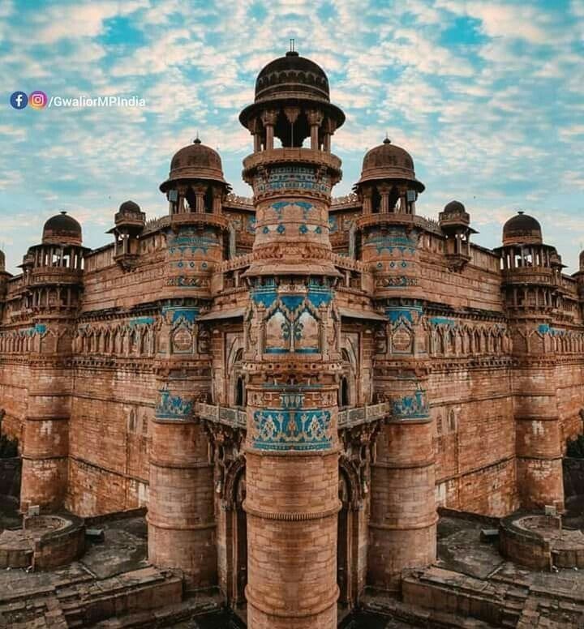 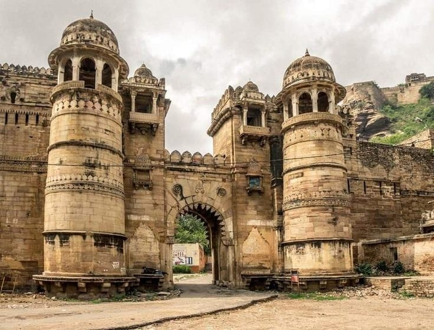 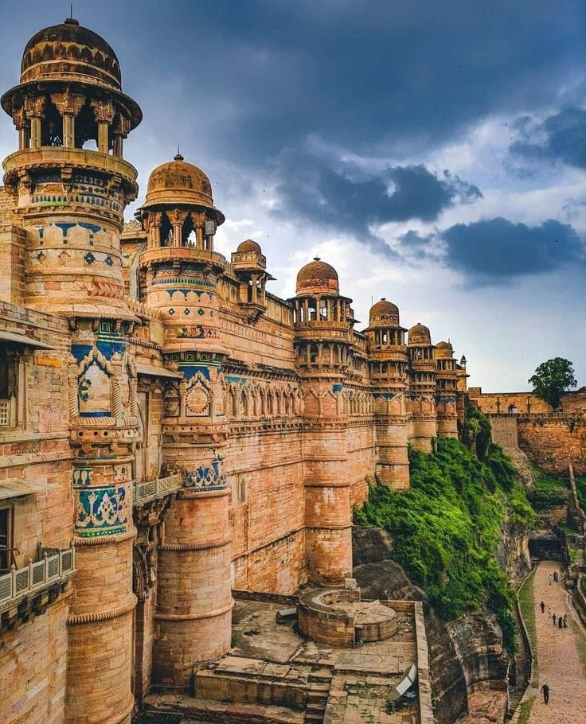Ruled by almost 110 rulers from different dynasties, Gwalior fort is profoundly steeped in history. The fort has been the witness of events like Tatya Tope fighting the British and Rani Lakshmi Bai breathing her last. What surprises one here are giant Jain sculptures carved of the cliffs and rocks at the foot of the hill on which the fort is built on. Gwalior fort has some of the most dramatic sites and it begins the moment one enters the gate. The Man Singh Palace is amongst one of the most beautiful structures present in the fort complex. The architectural style of the palace is a perfect example of the blend of Mughal and Hindu along with a hint of Chinese architecture. The ceramic glaze tiles, beautiful motifs and intricate lattice work all contribute in making Gwalior fort a very appealing monument in India.
October to March
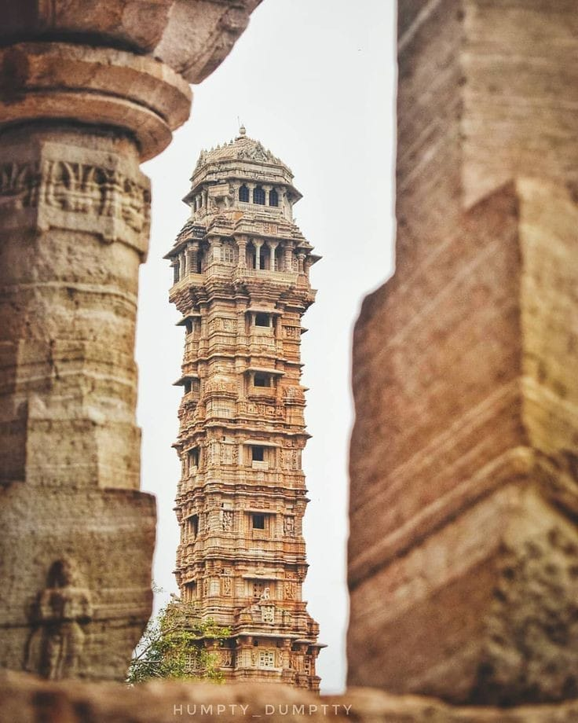 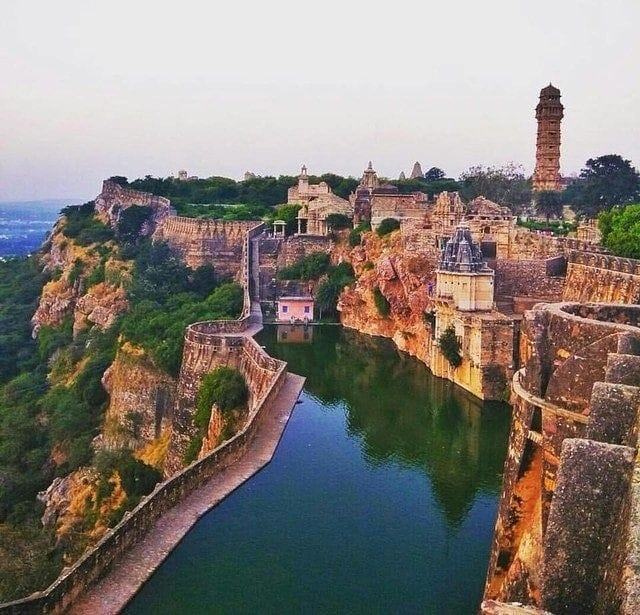 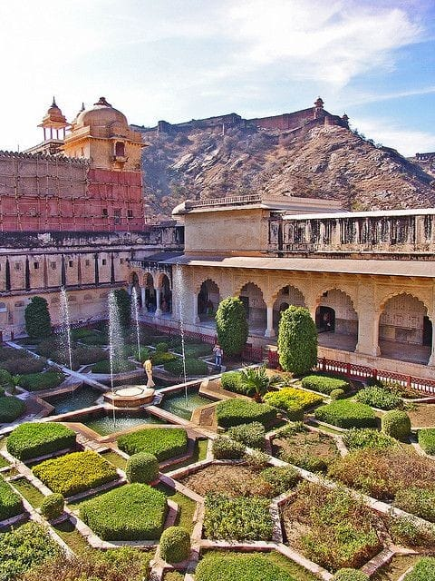Between Delhi and Rajasthan, Amer Fort can rightly be called the Gateway to Rajasthan. The construction of the fort is said to have begun in the 10th century but it was completed in the 1599. This imposing fort built on top of a hill has the record of never being conquered. Inside the fort are beautiful palaces and gardens, exquisitely painted and decorated rooms, hammams and terraces. Sheesh Mahal, Diwan-e-Aam, The Summer Residence, Palace of Man Singh I and Sila Mata Temple are the major attractions of the fort. The fort is enriched with frescoes, Jaaliwork and mosaic work. Today, a state of the gallery also operates from inside the fort. A sound and light is now a permanent feature to attract the visitors. The Palace is divided into four main sections each with its own entry gate and courtyard. The main entrance is through the Suraj Pole (Sun Gate) which leads to Jaleb Chowk, the first main courtyard.
October to February
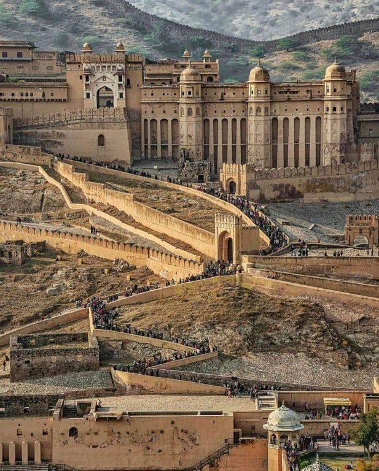 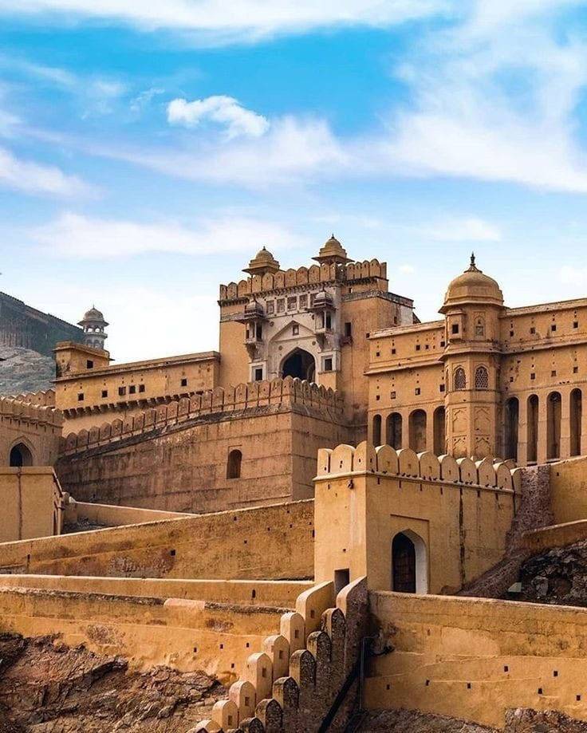 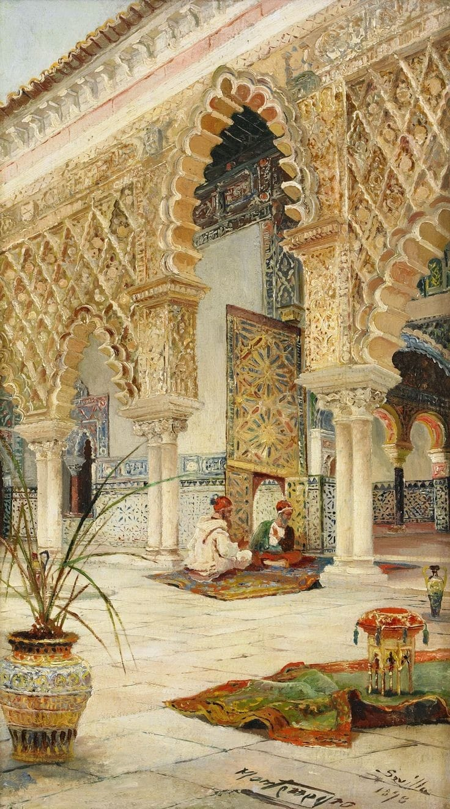